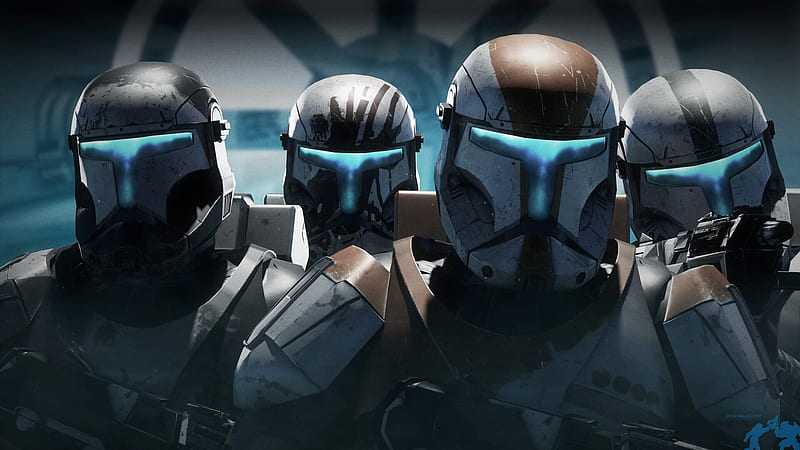
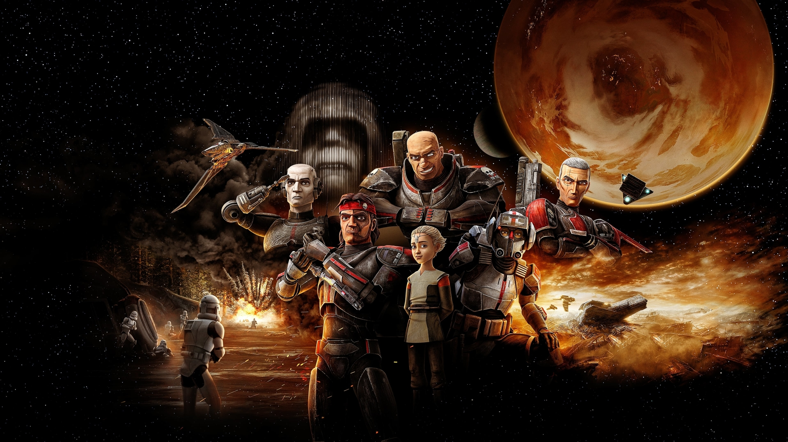
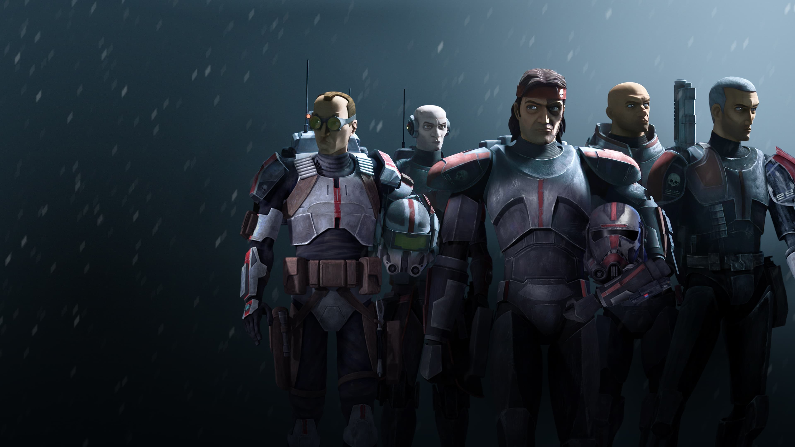

Pendant la guerre des clones, Delta Squad était composée d'une équipe de quatre commandos clones - le chef d'unité Clone Sergeant RC-1138 "Boss", le commandant en second RC-1140 "Hacker", RC-1207 "Sev" et RC-1262 "Nitro" - qui a servi dans la Grande Armée de la République. À un moment donné, Delta Squad a été déployé à partir d'un vaisseau de combat LAAT / i dans une zone de combat afin de prendre le contrôle du territoire. À la suite du massacre sur la planète Devaron , Delta Squad a récupéré les corps du Général Jedi Halsey et de son Padawan, Knox et les a ramenés au Temple Jedi sur Coruscant, la capitale mondiale de la République Galactique.
Boss relevait directement de plusieurs membres du Haut Conseil Jedi - Obi-Wan Kenobi, Plo Koon, Adi Gallia et Saesee Tiin - et les informa que toute la force militaire sur Devaron avait péri avec Halsey et son apprenti, conduisant le Conseil à soupçonner l'émergence d'une nouvelle menace pour l'Ordre Jedi. Leurs soupçons ont été confirmés lors de la récupération des images de sécurité de la bataille; un hologramme de la mort de Halsey a révélé que son assassin était un frère de la nuit de Dathomir, que les Jedi connaîtraient sous le nom de Savage Opress.

RC-1138, surnommé Boss ou encore Trois Huit, était un commando clone et le chef de l'escouade Delta. Il était un excellent guerrier et avait le sens de la coopération. Il était facile à reconnaître grâce à son armure peinte en orange. Ses coéquipiers étaient : Nitro (Delta RC-1262), Hacker (Delta RC-1140) et Sev (Delta RC-1207).
RC-1140 (surnommé Fixer) était un commando clone de la Grande Armée de la République. Il faisait partie de l'escouade Delta en tant qu'expert en technologie. Il était facilement reconnaissable avec son armure peinte en vert.

RC-1262, surnommé Scorch, était un commando clone de la Grande Armée de la République. Il faisait partie de l'escouade Delta en tant qu'expert en démolition et en explosifs. Il était facilement reconnaissable avec son armure peinte en gris et en jaune. Nitro avait un très grand sens de l'humour et disait souvent des plaisanteries à ses coéquipiers durant leurs missions.
RC-1207 (surnommé Sev) était un commando clone et un membre l'escouade Delta. Il était un maître au Sniper, mais possédait un humour noir qui ne plaisait pas à tout le monde. Son armure était peinte en rouge à certains endroits ce qui rappelait la couleur du sang. Sur son casque, la peinture forme l'emprunte d'une main ensanglantée. Sev fut porté disparu durant une mission sur la planète Kashyyyk.
Bad Batch
"J'ai entendu des avis très mitigés sur ces types-là. Ils ont un taux de réussite de 100% !"
"C'est pas le fait qu'ils gagnent mais la façon dont ils gagnent qui m'inquiète un peu..."
―Les clones Kix et Jesse, à propos de la Bad Batch

La Force Clone 99, aussi appelée Force expérimentale 99 ou Bad Batch, était une escouade de soldats clones dirigée par un sergent clone surnommé Hunter durant la Guerre des Clones. L'escouade fut nommée ainsi en référence au clone déformé 99.
Cette unité de la Brigade des Opérations Spéciales de la Grande Armée de la République se composait originellement de quatre clones nés avec des mutations génétiques. Crosshair, un soldat à l'œil de lynx, tireur d'élite qui avait la faculté de faire mouche sur des tirs à longue distance de l'objectif, Wrecker, l'homme fort de l'escouade, toujours brave et dévoué pour le combat rapproché, il était doté d'une musculature imposante qui faisant de lui un adversaire redoutable. Viens ensuite, Tech, un clone expert en informatique et très intelligent qui était capable de pirater les banques de données ennemies et enfin, Hunter, chef militaire hors pair unifiant parfaitement bien l'unité et pourvu de capacités sensorielles augmentées.
Chaque homme de l'escouade avait décoré son armure avec un blason représentant un crâne, qui pourrait être considéré comme leur symbole officieux qui permet de distinguer clairement les quatre soldats du reste de l'armée républicaine. De plus, en guise de non appartenance aux autres unités, ils surnommaient "regs" les clones normaux, et d'un ton assez méprisant. Après la Bataille d'Anaxes, le caporal clone Echo rejoignit l'escouade.

Hunter était un commando clone, membre de la Grande Armée de la République, qui servit la République Galactique durant la Guerre des Clones. En tant que clone génétiquement modifié, il possédait un talent tout particulier, lui permettant de ressentir des ondes électromagnétiques très éloignées de part ses sens ultra affutés. Grâce à cette capacité, il devint le sergent de la Force Clone 99, surnommée « Bad Batch », et participa à de nombreuses missions très dangereuses. Après la fin de la guerre et l'Ordre 66, lui et le Bad Batch devinrent des mercenaires, quittant le nouvel Empire Galactique.
"Les bons soldats obéissent aux ordres."
―Crosshair
Crosshair, de matricule CT-9904, était un commando clone, membre de la Grande Armée de la République, qui servit la République Galactique durant la Guerre des Clones. En tant que clone génétiquement modifié, il possédait un talent tout particulier, lui permettant de toucher n'importe quelle cible à plusieurs clicks de distance. Grâce à cette capacité, il intégra la Force Clone 99 et participa à de nombreuses missions très dangereuses. Après la fin de la guerre et l'Ordre 66, Crosshair resta fidèle au nouveau régime en place.
Tech était un commando clone, membre de la Grande Armée de la République, qui servit la République Galactique durant la Guerre des Clones. En tant que clone génétiquement modifié, il possédait un talent tout particulier, spécialiste en technologie hyper-intelligent et très compétent dans le domaine du piratage informatique. Grâce à cette capacité, il intégra la Force Clone 99, surnommée « Bad Batch », et participa à de nombreuses missions très dangereuses. Après la fin de la guerre et l'Ordre 66, lui et le Bad Batch devinrent des mercenaires, quittant le nouvel Empire Galactique.
Wrecker était un commando clone, membre de la Grande Armée de la République, qui servit la République Galactique durant la Guerre des Clones. En tant que clone génétiquement modifié, il possédait un talent tout particulier, une force physique hors du commun rendue possible grâce à une musculature très développée par rapport aux autres soldats. Grâce à cette capacité, il intégra la Force Clone 99, surnommée « Bad Batch », et participa à de nombreuses missions très dangereuses. Après la fin de la guerre et l'Ordre 66, lui et le Bad Batch devinrent des mercenaires, quittant le nouvel Empire Galactique.
Echo fut par la suite réintégré à la Grande Armée de la République et prit part à la bataille d'Anaxes en infiltrant les banques de données séparatistes pour induire en erreur leur armée. La bataille fut une victoire décisive pour la République Galactique. Au terme de l'affrontement, il rejoignit la Force Clone 99, également appelé Bad Batch, une escouade de clones génétiquement modifiés ayant subi des mutations uniques et "profitables". Echo qui se retrouvait dans cette unité d'élite salua, comme tous les autres du groupe, le capitaine Rex, son sauveur, et s'en alla.
Omega était une jeune clone non altérée qui vécut vers la fin de la Guerre des Clones. Créée à partir de l'ADN pur du chasseur de primes Jango Fett, elle vécut ses premières années sur Kamino dans Tipoca City. À cette époque, elle était alors l'assistante médicale de la Kaminoenne Nala Se et fut témoin de la création du Bad Batch. À la fin du conflit galactique, l'enfant développa un grand intérêt pour ce groupe composé de clones génétiquement modifiés. Peu après, elle rallia cette équipe et fuit Kamino, tombé sous le joug de l'Empire Galactique.